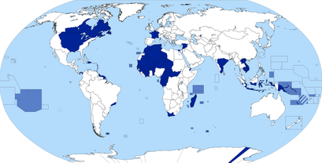

SOCIALES
COLONIAS FRANCESAS
Las colonias francesas, un vasto imperio que se extendió por diversos continentes, jugaron un papel crucial en la historia mundial. Durante los siglos XVII y XVIII, Francia estableció asentamientos en América del Norte, el Caribe, y en el Pacífico. En América del Norte, los territorios como Nueva Francia, que abarcaba desde el actual Canadá hasta partes de los Estados Unidos, se convirtieron en centros de comercio de pieles y cultura francesa.
En el Caribe, las islas como Guadalupe y Martinica se transformaron en importantes productores de azúcar gracias a la labor de esclavos africanos, y estas colonias ayudaron a consolidar la posición económica de Francia. Mientras tanto, en el Pacífico, territorios como Tahití y Nueva Caledonia se integraron a la esfera colonial francesa, trayendo consigo una influencia cultural duradera.
A medida que avanzaba el siglo XIX, el imperio francés se expandió aún más, con colonias en África y Asia, incluyendo Argelia, Indochina y Senegal. Estas regiones no solo enriquecieron a Francia económicamente, sino que también intensificaron la influencia cultural y política de la nación en el escenario global.
Sin embargo, el costo humano y las luchas por la independencia en el siglo XX evidenciaron las tensiones inherentes al colonialismo. Las luchas por la autodeterminación en Argelia, Indochina y otras colonias llevaron a una transformación en la política francesa y a un proceso de descolonización que redefiniría el mapa mundial. Hoy, las colonias francesas han dado paso a una nueva era de relaciones internacionales, pero su legado sigue marcando la historia y la cultura de las regiones que una vez estuvieron bajo su dominio.

¿QUE COLONIZARON?
Las colonias francesas abarcaron una vasta variedad de territorios en diferentes partes del mundo, cada una con sus propias características y recursos. Aquí te detallo algunas de las áreas clave que Francia colonizó:
AMERICA DEL NORTE
Nueva Francia: Incluía la región que hoy es Canadá, extendiéndose desde la costa atlántica hasta el río Misisipi. Las principales áreas eran Quebec y la Luisiana. Los franceses establecieron importantes asentamientos y se dedicaron al comercio de pieles.
Islas del Caribe: Guadalupe, Martinica y San Domingo (actual Haití) fueron colonizadas principalmente para la producción de azúcar y otros cultivos, utilizando mano de obra esclava africana. África:
Argelia: Conquistada en 1830, Argelia se convirtió en una importante colonia francesa en el norte de África. Su integración en el imperio francés fue profunda y duradera hasta su independencia en 1962. Senegal: Parte de la África Occidental Francesa, fue un centro importante para el comercio y la administración colonial. Dakar, su capital, se convirtió en un punto neurálgico del comercio y la cultura colonial.
Madagascar: Colonizada en 1896, Madagascar fue una de las colonias más grandes en el Océano Índico, destacándose por su biodiversidad y su estrategia militar. Asia:
Indochina Francesa: Incluía los territorios de Vietnam, Laos y Camboya. Francia controló esta región desde mediados del siglo XIX hasta mediados del siglo XX, con un fuerte impacto en la política, economía y cultura local.
Siria y Líbano: Tras la Primera Guerra Mundial, Francia recibió el mandato sobre estos territorios bajo el sistema de mandatos de la Sociedad de Naciones, y su influencia persiste en aspectos políticos y culturales. Oceano Pacífico:
Polinesia Francesa: Incluye Tahití y otras islas, y ha sido una parte integral del imperio francés en el Pacífico desde el siglo XIX.
Nueva Caledonia: Fue colonizada en 1853 y se convirtió en una importante base estratégica y económica en el Pacífico Sur.
Estas colonias jugaron un papel vital en la expansión del poder francés, influyendo en la economía global, la cultura y la política. Sin embargo, también llevaron a conflictos y tensiones, tanto dentro de las colonias como entre Francia y otras potencias coloniales, y a las luchas por la independencia en el siglo XX.
